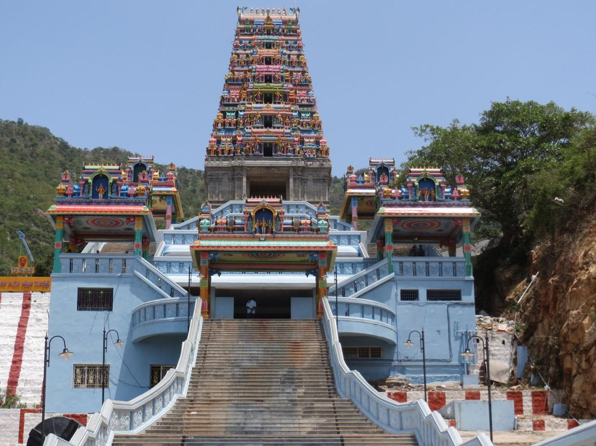
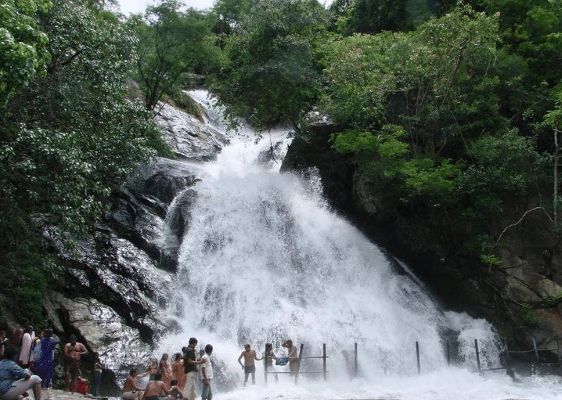
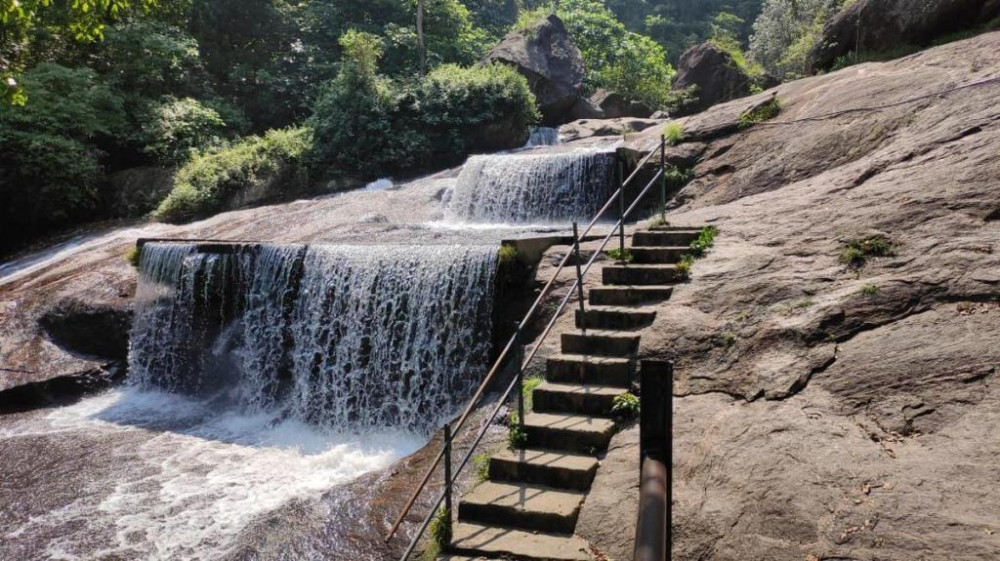
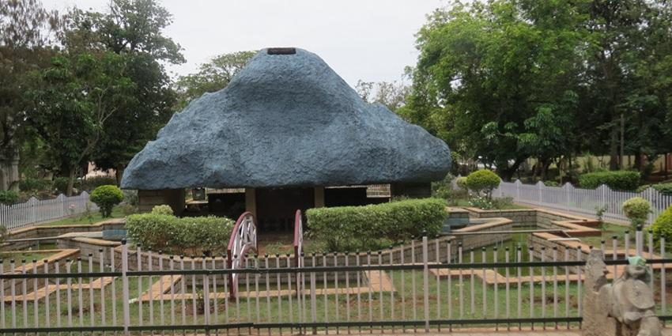
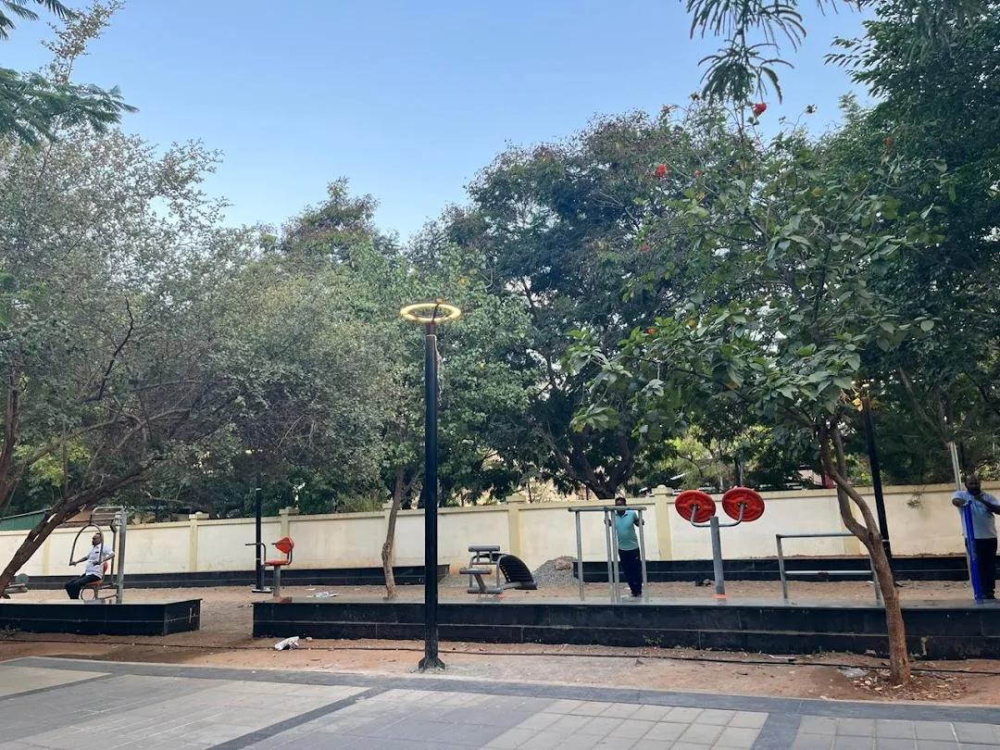

Welcome to Coimbatore
Explore the beauty of Coimbatore with scenic hills, waterfalls, temples, transport facilities, hotels, hospitals and emergency services.
Explore Map
Explore the beauty of Coimbatore with scenic hills, waterfalls, temples, transport facilities, hotels, hospitals and emergency services.
Explore Map
Discover the most popular places to visit in Coimbatore.
The world's largest bust sculpture of Lord Shiva located at Isha Yoga Center.

A famous hill temple dedicated to Lord Murugan, offering beautiful views of Coimbatore.

A beautiful waterfall surrounded by forests, famous for its crystal-clear and sweet water.

A scenic waterfall located in the Western Ghats, surrounded by lush green forests.

A popular family destination featuring a zoo, children's play area and beautiful gardens.

A popular walking and jogging destination in Coimbatore, surrounded by greenery, cafés and a peaceful atmosphere.
Easy and convenient transportation across Coimbatore.
Ola, Uber, Red Taxi and local taxi services are available throughout the city.
Government and private buses connect Coimbatore with all major towns and nearby cities.
Coimbatore Junction provides regular train services to major cities across India.
Best hotels to stay during your visit.
A luxury hotel offering premium rooms, dining and modern facilities.
A stylish five-star hotel with comfortable accommodation and excellent service.
A modern business hotel with quality rooms and convenient city access.
Emergency medical services available nearby.
One of the leading multi-speciality hospitals in Coimbatore with 24×7 emergency care.
A trusted healthcare institution known for advanced medical treatment and experienced doctors.
Renowned for orthopaedic care and advanced medical facilities.
Know some interesting facts about Coimbatore.
Coimbatore
Tamil
Adiyogi Shiva Statue & Textile Industry
Important helpline numbers for your safety.
100
108
101
View Coimbatore location on Google Maps.